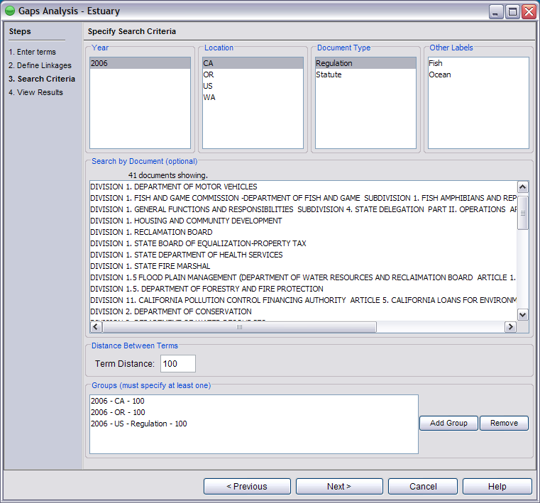
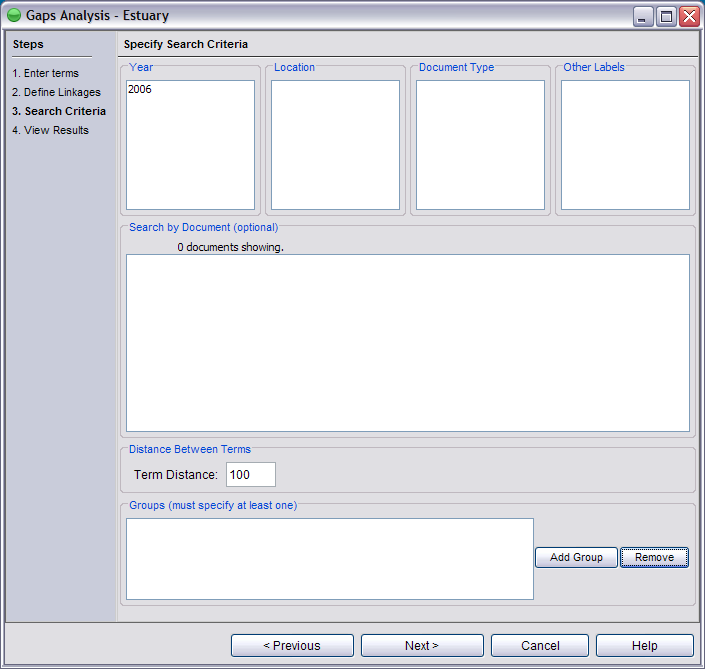

The search mechanism has been greatly enhanced since the beta version of MINOE. If you have the beta version, this is what the search criteria screen looks like:
The new version looks like this:

Let's go over the differences:
1. Dynamic and custom filtering.
In the beta version, searching was static and limited to the checkboxes that appeared on the screen. The checkboxes were pre-determined and therefore could not be changed. This was fine for beta, but in real life someone using the program would need someway to tell the program what kind of documents they had in the program.
The addition of the Import Documents module gives users a way to tell MINOE about the documents by specifying "meta data" for each document. Each document requires a Year, Location and Document Type. It is entirely up to the user to decide what the Year, Location and Document Types are, there are few rules. In our example, the locations we have are state abbreviations, and the document types we have are either regulations or statutes. These criteria are defined in the meta data and can be manipulated through the Meta Data Editor module. MINOE looks at the meta data for each document and automatically gives the user the correct filtering choices. (See the Meta Data help section for a more detailed explanation.)
The search criteria populates based upon what you select in each category. Notice that since no Year is selected, no Location, Document Type or Other Labels are showing. The Search by Document list is also blank:

2. Term Distance.
In the beta version, law documents were neatly divided by sections into smaller documents called "granules". Granules, as great as they were, posed a problem due to the fact that there is no technology freely available to parse your own documents into sections (well, there is, but each jurisdiction handles their documents differently and the separation process is actually quite tedious.). Adding "Term Distance" mimics the functionality of dividing documents into sections by constricting the distance that two terms must lie within.
Term Distance is the maximum number of words that can appear between two components in our ecosystem model. Let's say that we have one term "lobster" and another term "trap". A Term Distance of 0 means that trap must immediately follow lobster ("lobster trap") or vice-a-versa ("trap lobster"). A Term Distance of 100 means that there can be up to, but no more than, 100 words between "lobster" and "trap" in the document (the order that they occur in the document doesn't matter). Term Distance applies to every component in the ecosystem model.
3. Groups.
Groups offer a way to run an analysis on multiple combinations of Years, Locations, Document Types, Other Labels and Term Distances. Notice in the screenshot below that there are 3 groups specified:
To create a Group, simply select the search criteria, set the term distance you like and click the "Add Group" button. You need at least one group to run an analysis.
Once your criteria are defined, click Next and the program will run the analysis.